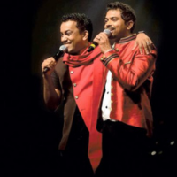
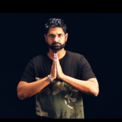
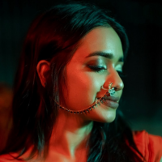
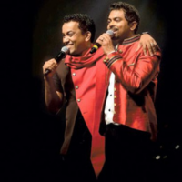
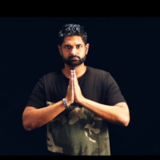
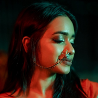

Some of Populer Albums


description
Sinhala songs, originating from Sri Lanka, form a rich tapestry of music characterized by their diverse influences and unique cultural elements. They encompass a wide array of genres, from traditional folk music to contemporary pop, and are typically sung in Sinhala, the primary language of the Sinhalese people. Traditional Sinhala music often features elements such as rhythmic drumming, intricate melodies, and the use of classical instruments like the tabla, sitar, and violin, reflecting the country’s deep-rooted cultural heritage and its connections to South Asian musical traditions. Folk songs, often passed down through generations, capture the essence of rural life, celebrations, and historical narratives, preserving the cultural identity and folklore of the Sinhalese community. On the other hand, modern Sinhala music incorporates global influences, blending Western pop, rock, hip-hop, and electronic sounds with local rhythms and themes. This fusion has given rise to a dynamic and evolving music scene that resonates with both traditional and contemporary audiences. Prominent artists like Bathiya and Santhush (BNS), Iraj Weeraratne, and Umaria Sinhawansa have been instrumental in shaping the contemporary landscape of Sinhala music, bringing innovative styles and widespread popularity to the genre. Through its vibrant mix of traditional and modern influences, Sinhala music continues to play a significant role in the cultural expression and identity of the Sri Lankan people, reflecting the island’s rich history, diversity, and evolving artistic spirit.
Some of the popular Artists
- chamara weerasinghe
- Bathiya and Santhush (BNS)
- Iraj
- Kanchana Anuradhi
- Adithya Weliwatta
- Sanuka Wickramasinghe
 




